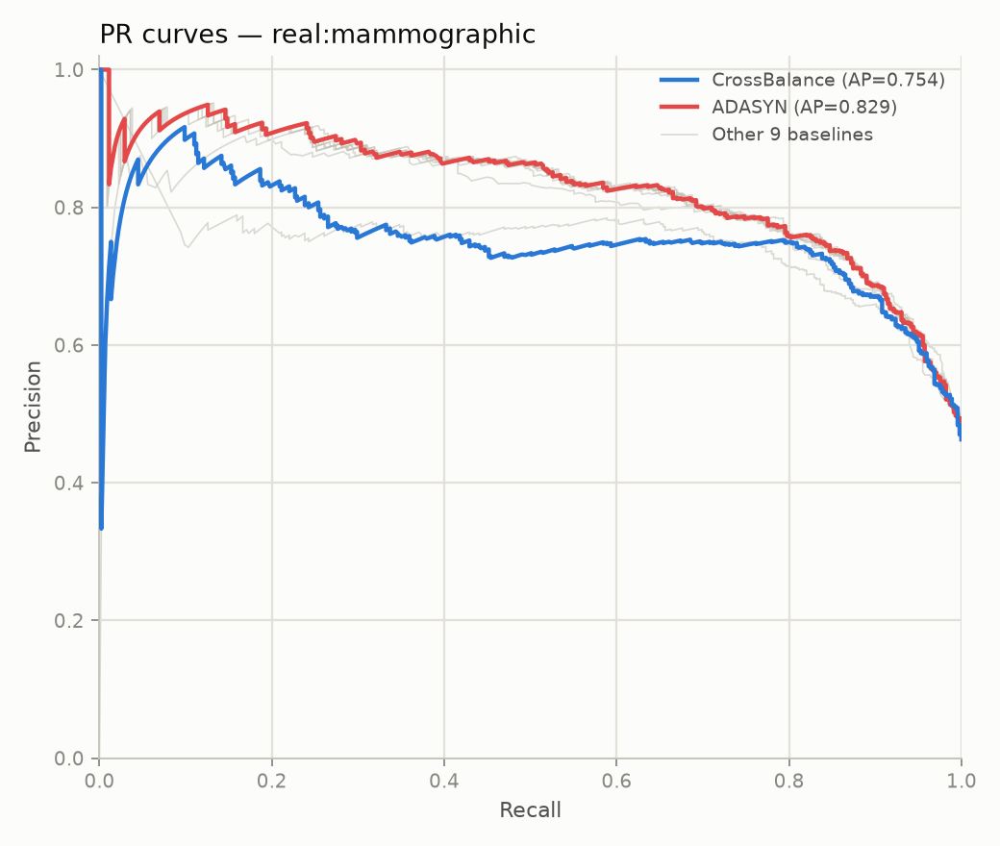

| Rank | Method | AUCPR | PRECISION | RECALL | MACRO F1 | G MEAN | MCC | BALANCED ACCURACY |
|---|---|---|---|---|---|---|---|---|
| 1 | ADASYN | 0.8363 | 0.7553 | 0.8317 | 0.7954 | 0.7963 | 0.5987 | 0.7986 |
| 2 | Baseline | 0.8356 | 0.7578 | 0.8158 | 0.7920 | 0.7927 | 0.5901 | 0.7945 |
| 3 | ClassWeighted | 0.8354 | 0.7476 | 0.8428 | 0.7932 | 0.7941 | 0.5971 | 0.7973 |
| 4 | SMOTE | 0.8350 | 0.7485 | 0.8407 | 0.7933 | 0.7942 | 0.5966 | 0.7972 |
| 5 | BorderlineSMOTE | 0.8350 | 0.7326 | 0.8607 | 0.7881 | 0.7892 | 0.5911 | 0.7936 |
| 6 | RandomUnderSampler | 0.8350 | 0.7429 | 0.8428 | 0.7902 | 0.7911 | 0.5913 | 0.7944 |
| 7 | SMOTETomek | 0.8345 | 0.7490 | 0.8429 | 0.7943 | 0.7953 | 0.5989 | 0.7983 |
| 8 | RandomOverSampler | 0.8340 | 0.7444 | 0.8429 | 0.7912 | 0.7922 | 0.5931 | 0.7954 |
| 9 | EasyEnsemble | 0.8178 | 0.7475 | 0.7980 | 0.7793 | 0.7796 | 0.5652 | 0.7817 |
| 10 | CrossBalance | 0.7686 | 0.7580 | 0.4029 | 0.6297 | 0.5925 | 0.3379 | 0.6462 |
| 11 | BalancedRandomForest | 0.7496 | 0.7281 | 0.7823 | 0.7617 | 0.7621 | 0.5302 | 0.7643 |
